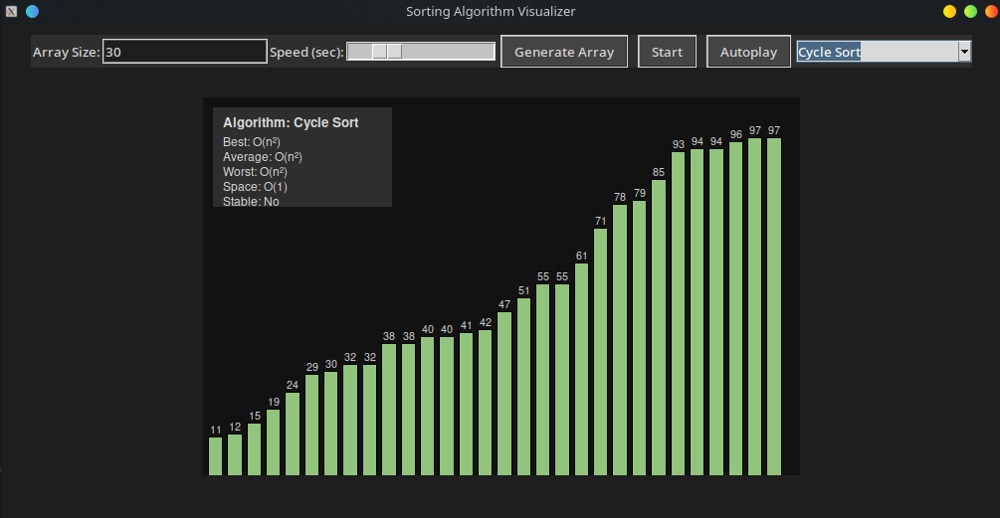

✨ Features
- Visualize 20+ sorting algorithms
- Dynamic bar animations with sound
- Random colors for endless entertainment
- Algorithm metadata overlays
- Autoplay and completion sweeps
üñºÔ∏è Gallery
⚙️ Setup
git clone https://github.com/OSCUA/sorting-algorithm-visualizer
cd sorting-algorithm-visualizer
python -m venv venv
source venv/bin/activate
pip install pygame malplotlib
python main.py